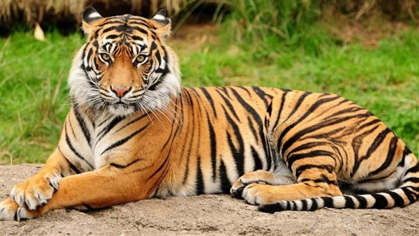
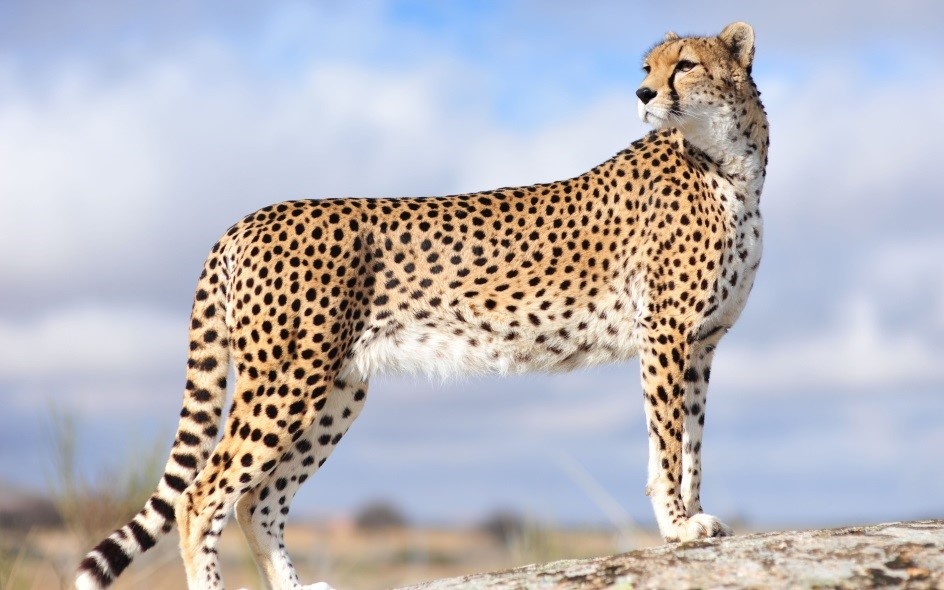

الأسد

الأسد حيوان بري مهيب، معروف بقوته وشجاعته. غالبًا ما يُشار إليه باسم ملك الغابة
الفيل

الفيل هو أكبر حيوان بري، معروف بذكائه وسلوكه الاجتماعي. لديه جذع ضخم وأنياب كبيرة
الزرافة

الزرافة حيوان بري طويل القامة ورشيق، يتميز برقبته الطويلة. معروفة بمعطفها المرقط وطبيعتها اللطيفة
النمر
النمر حيوان بري متميز بفروه المخطط وقوته البدنية. يُعتبر صيادًا ماهرًا ويعيش في مختلف المناطق
الفهد
الفهد حيوان بري ذو فراء مرقط، يتميز بسرعته الكبيرة. يعيش في المناطق الجافة والعشبية